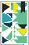

Edugates International School
Math-Science Team • Official Puzzle Reference Manual
Solo | Contents | Index | Tents
ZooDoku (Queens & Colored Habitats)
ZooDoku is a pure-deduction spatial logic puzzle (mathematically related to 1-Star Battle and Non-Attacking Rook-King Permutations). Instead of arithmetic or number lists, an N×N zoo grid is partitioned into N colored polyomino habitats. Your goal is to place exactly N animals so that every row, column, and colored habitat receives its own animal without any two animals touching.
1. One per Row
Every horizontal row contains exactly one animal.
2. One per Column
Every vertical column contains exactly one animal.
3. One per Colored Habitat
Every colored region (even if split on 10×10 Olympiad boards) contains exactly one animal.
4. No Touching (Even Diagonally)
Two animals may never share an edge or a corner — all 8 surrounding squares around an animal are ruled out!
Every generated ZooDoku board is verified by an exact combinatorial solver to have a single unique solution solvable step-by-step with zero guessing.
1. Smartboard & Touch Controls
- Tap Cycle (Default Mode): Tap an empty square once to mark
✕ (eliminated). Tap a ✕ square again to place your animal (🦁). Tap an animal to clear the square.
- Drag to Sweep
✕: Press and drag across empty squares to paint a continuous trail of ✕ marks, or drag starting on an ✕ to erase multiple ✕ marks without disturbing placed animals.
- Right-Click / Secondary Mode: Directly toggles
✕ elimination marks.
- 1-Tap Animal (Aux Mode): Places or removes an animal in a single tap.
✕ Auto-✕ Sweep & Live ⚡ Auto-✕ Mode: Automatically crosses off the row, column, colored habitat, and 8 neighboring squares around placed animals.💡 Smart Hint: Analyzes your current board and highlights the exact next logical deduction (such as Last Square Standing, Region Confinement, or No-Touching Shadow).- Animal Mascot Selector: Cycle between Lion, Cat, Giant Panda, Red Fox, Tree Frog, Owl, Giraffe, Tiger, and Mixed Zoo mode, or switch to Blueprint board style for geometric colorblind-friendly region patterns.
2. Core Logical Deduction Techniques
- Small Anchor Habitats: Always inspect 1-square, 2-square, and 3-square habitats first. A 1-square habitat immediately receives an animal; a 2-square domino habitat rules out the squares touching both ends of the domino!
- Region ↔ Line Confinement: If all remaining open squares of the Pink habitat lie inside Row 4, then Row 4's animal must be Pink — so every non-Pink square in Row 4 can be marked
✕. Conversely, if all open squares of Column 2 lie inside the Green habitat, the rest of Green outside Column 2 can be marked ✕.
- Two-Habitat Pigeonhole: If two colored habitats only have open squares inside Rows 1 and 2, those two habitats claim both rows' animals — eliminating every other color in Rows 1 and 2.
- What-If Elimination (Advanced 9×9 & 10×10): On Master and Olympiad grids, test a tight square mentally: if placing an animal there immediately wipes out every remaining cell of a neighboring small habitat, that square must be
✕.
3. Difficulty Tiers & Sizes
- Daily ZooDoku (8×8): Deterministic daily puzzle shared across all classroom Smartboards on the same calendar date.
- 5×5 Junior Zoo & 6×6 Easy: Gentle warm-ups solvable purely with direct elimination and 2-cell domino shadows.
- 7×7 Classic & 8×8 Medium: Balanced classroom puzzles featuring region-line confinement and two-habitat pigeonhole deductions.
- 9×9 Hard & 10×10 Olympiad (Split Zones): Competition-grade boards requiring multi-region confinement and non-contiguous habitat patches marked with
◆.
Edugates International School — Math-Science Team •
Interactive Smartboard Edition (Bilingual Arabic / English Discrete Mathematics Lab)